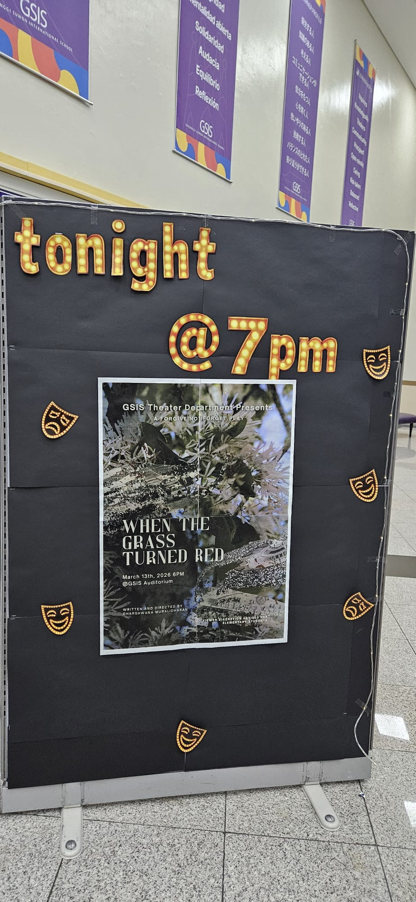
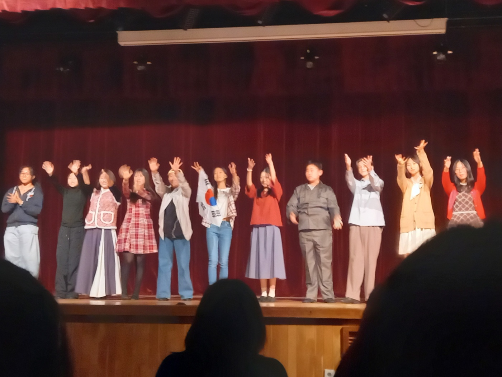
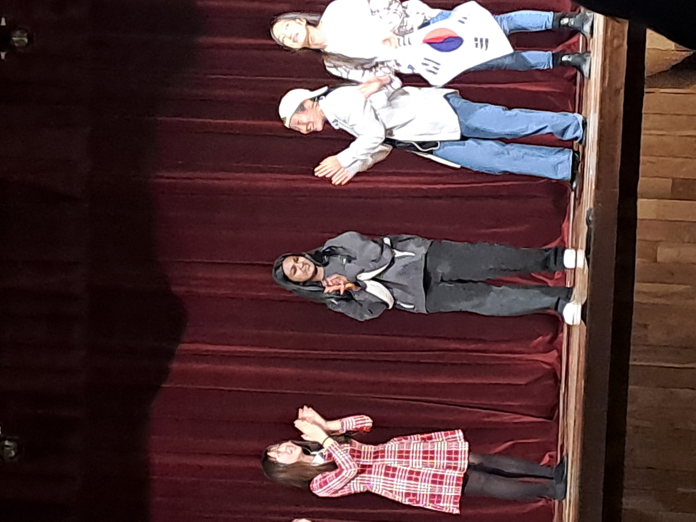
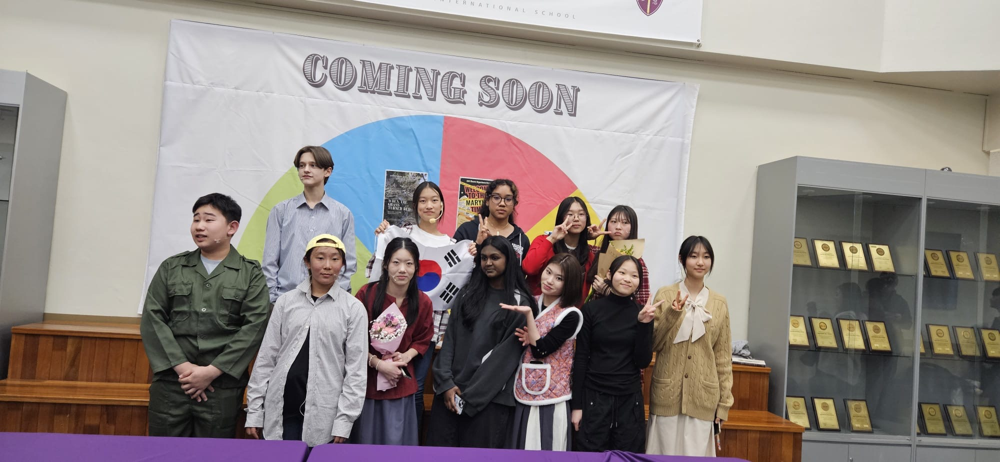

When the grass turned red - A production from "Forgive Not Forget"
March 2026
On May 18, 1980, the first protests began outside Chonnam National University. College students gathered at the university gates to protest the closure of their campus and the widening of martial law. Soldiers were already stationed at the campus, and when the students attempted to gather, they were met with force.
As word traveled through Gwangju, more students joined the demonstrations. Soon workers, taxi drivers, shop owners, and families began to stand with them. What began as a small student protest grew into a citywide movement. The bravery of college students led to one of the largest fights for democracy on this peninsula.
History reminds us that these struggles are never only about the past. Just one year ago, many in Korea again faced a moment that tested the strength of democratic institutions. In that moment, the courage of citizens and leaders helped prevent the return of martial law. When the Grass Turned Red is a story of students who refused to remain silent.
Our production has one simple goal. Forgive, but do not forget. Forgive, so that a nation can heal. But do not forget, so that the sacrifices of Gwangju are honored and such a tragedy is never repeated.
Link to the Play: Watch on YouTube

When the grass turned red Invite

A scene from the When the grass turned red production

A scene from the When the grass turned red production

When the grass turned red Closing